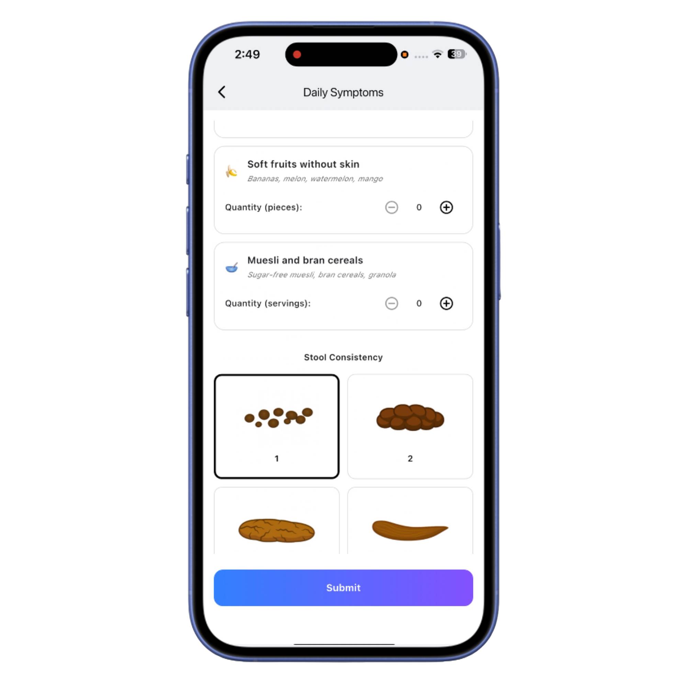

iLARS
Your story after surgery. Track symptoms, stay in touch with your doctor, and get personalized insights.

Your story after surgery. Track symptoms, stay in touch with your doctor, and get personalized insights.
The first app for life after rectal cancer surgery
iLARS helps patients track bowel symptoms, understand patterns, and share clear summaries with their care team. Built with clinicians to support recovery and daily life after surgery.
To track the most important parameters
Fiber, sitting time, hydration, trigger foods
We combine validated scores with daily data to help you see how lifestyle, food and routines affect your bowel symptoms. iLARS summarizes trends so you and your doctor can act earlier.

iLARS comes with a secure web dashboard so clinicians can follow their patients over time. Doctors see symptom trends, LARS scores and daily entries in one place.
This makes it easier to identify who needs attention, prepare for visits and adjust treatment based on real data instead of fragmented notes.